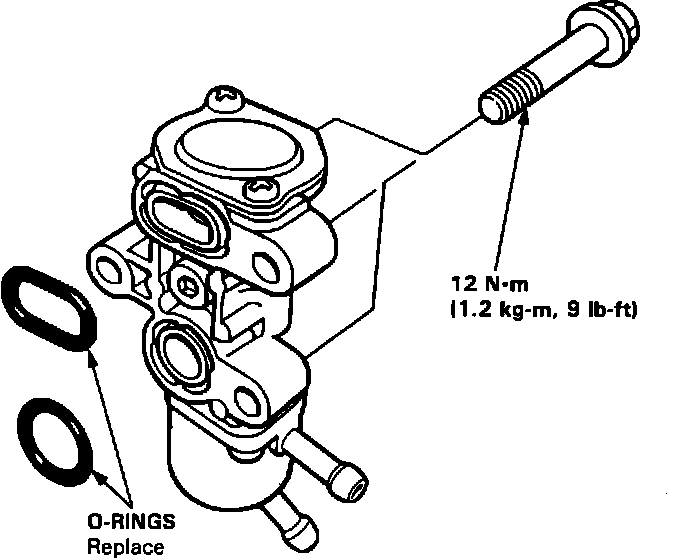

Auxiliary Air Valve (Idle Speed): Service and Repair
WARNING: Make sure engine is cool before removing the Fast Idle Valve as it is heated with engine coolant and may cause burns.
Fast Idle Valve Installation:

1. Remove and plug coolant hoses from fast idle valve
2. Remove attaching bolts (3).
3. Clean and inspect bypass ports.
4. Re-assemble in reverse order using NEW O-rings.
5. Torque retainer bolts to:
9 ft.lbs. (1.2 kg-m)